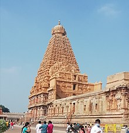

Thanjai big temble

For the Brihadiswara temple in Gangaikonda Cholapuram, see Brihadisvara Temple, Gangaikonda Cholapuram.
"Rajarajeswaram" redirects here. For the Shiva temple in Taliparamba, Kerala, see Rajarajeshwara Temple.
Brihadisvara Temple
தஞ்சைப் பெருவுடையார் கோயில்
Brihadisvara Temple complex is a part of the UNESCO World Heritage Site, known as the Great Living Chola Temples.
Brihadishvara Temple complex
Religion
Affiliation Hinduism
District Thanjavur district
Deity Shiva
Festivals Maha Shivaratri
Location
Location Thanjavur
State Tamil Nadu
Country India
Brihadisvara Temple is located in IndiaBrihadisvara Temple
Location in Tamil Nadu, India
Show map of India
Show map of Tamil Nadu
Show all
Geographic coordinates 10°46′58″N 79°07′54″E
Architecture
Style Chola architecture
Creator Rajaraja I
Completed 1010 CE[1][2]
Inscriptions Tamil
Elevation 66 m (217 ft)
UNESCO World Heritage Site
Official name The Brihadisvara Temple complex, Thanjavur
Part of Great Living Chola Temples
Criteria Cultural: (ii), (iii)
Reference 250bis-001
Inscription 1987 (11th Session)
Extensions 2004
Area 18.07 ha (44.7 acres)
Buffer zone 9.58 ha (23.7 acres)
Brihadishvara Temple, called Rajarajesvaram (lit. 'Lord of Rajaraja') by its builder, and known locally as Thanjai Periya Kovil (lit. 'Thanjavur Big Temple') and Peruvudaiyar Kovil, is a Shaivite[3][4] Hindu temple built in a Chola architectural style[5] located on the south bank of the Cauvery river in Thanjavur, Tamil Nadu, India.[1][6] It is one of the largest Hindu temples and an exemplar of Tamil architecture.[7] It is also called Dakshina Meru (Meru of the South).[8] Built by Chola emperor Rajaraja I between 1003 and 1010 CE, the temple is a part of the UNESCO World Heritage Site known as the "Great Living Chola Temples", along with the Chola-era Gangaikonda Cholapuram temple and Airavatesvara temple, which are about 70 kilometres (43 mi) and 40 kilometres (25 mi) to its northeast respectively.[9]
The original monuments of this 11th-century temple were built around a moat. It included gopura, the main temple, its massive tower, inscriptions, frescoes, and sculptures predominantly related to Shaivism, but also of Vaishnavism and Shaktism. The temple was damaged in its history and some artwork is now missing. Additional mandapam and monuments were added in the centuries that followed. The temple now stands amidst fortified walls that were added after the 16th century.[10][11]
Built using granite, the vimana tower above the shrine is one of the tallest in South India.[6] The temple has a massive colonnaded prakara (corridor) and one of the largest Shiva lingas in India.[6][9][12] It is also famed for the quality of its sculpture, as well as being the location that commissioned the brass Nataraja, Shiva as the lord of dance, in the 11th century. The complex includes shrines for Nandi, Parvati, Murugan, Ganesha, Sabhapati, Dakshinamurti, Chandeshvara, Varahi, Thiyagarajar of Thiruvarur, Siddhar Karuvoorar and others.[9][13] The temple is one of the most visited tourist attractions in Tamil Nadu.[14]